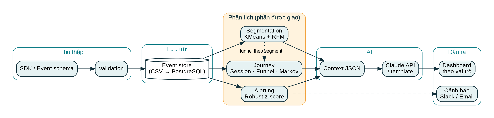
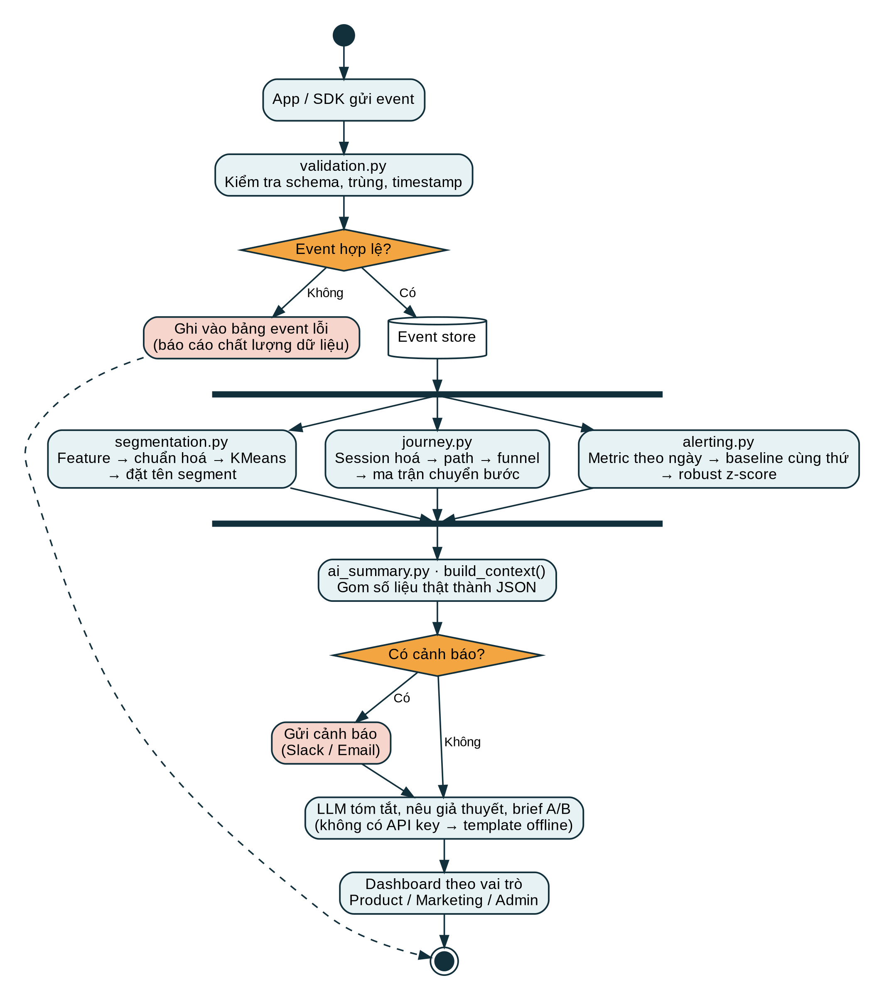
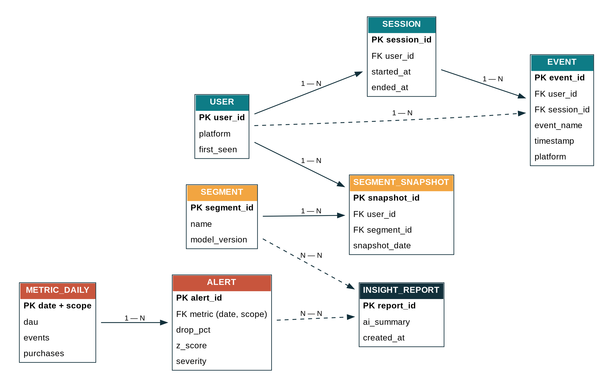

Ba kỹ thuật cốt lõi — Segmentation, Journey analysis và cảnh báo engagement giảm bất thường — cài đặt bằng Python, chạy trên dữ liệu giả lập và hiển thị bằng biểu đồ tương tác. Mọi số liệu trên trang này được sinh ra từ chính mã nguồn trong repo.
Chỉ nhìn tổng DAU hay doanh thu thì không biết ai đang dùng thế nào, họ rơi ở đâu và khi nào có sự cố. Ba kỹ thuật này trả lời ba câu hỏi đó.
Chia user thành nhóm có hành vi giống nhau (RFM + hành vi, K-Means) để cá nhân hoá thay vì một chiến dịch cho tất cả.
Session hoá event, tìm đường đi phổ biến, funnel và ma trận chuyển bước để thấy điểm nghẽn.
So hôm nay với baseline cùng thứ, dùng median + MAD (robust z-score) để phát hiện sớm và chỉ ra giảm ở đâu.
Event đi qua validation vào event store, ba module phân tích chạy song song, kết quả được gom thành JSON cho AI diễn giải và đổ ra dashboard.



Dữ liệu giả lập 1,493 user trong 60 ngày, có chèn sẵn một sự cố làm nền tảng Android giảm hoạt động ở cuối kỳ. Di chuột lên biểu đồ để xem chi tiết.
| segment | users | recency_days | active_days | views | purchases | share_% |
|---|---|---|---|---|---|---|
| Đã rời bỏ / ngủ đông (churned) | 737 | 20.23 | 8.18 | 26.62 | 0.64 | 49.4 |
| Người dùng thỉnh thoảng (casual) | 520 | 1.86 | 28.54 | 119.82 | 1.28 | 34.8 |
| Khách trung thành mua nhiều (power buyer) | 236 | 1.39 | 39.05 | 166.01 | 23.61 | 15.8 |
| path | sessions | share_% |
|---|---|---|
| app_open → view_product | 14114 | 32.0 |
| app_open → view_product → search → view_product | 5449 | 12.4 |
| app_open | 4213 | 9.6 |
| app_open → view_product → search | 3432 | 7.8 |
| app_open → view_product → add_to_cart → checkout_start → purchase | 2790 | 6.3 |
| app_open → view_product → add_to_cart | 1737 | 3.9 |
| app_open → view_product → search → view_product → search | 1400 | 3.2 |
| app_open → view_product → search → view_product → search → view_product | 1179 | 2.7 |
| app_open → view_product → search → view_product → add_to_cart → checkout_start → purchase | 1044 | 2.4 |
| app_open → view_product → add_to_cart → checkout_start | 754 | 1.7 |
Ở mức toàn hệ thống DAU chỉ giảm khoảng một phần tư, nhưng khi chia theo nền tảng thì Android giảm hơn một nửa. Cảnh báo theo phạm vi giúp thấy đúng nguồn gốc sự cố.
| Ngày | Mức | Metric | Phạm vi | Thực tế | Baseline | Giảm | z |
|---|---|---|---|---|---|---|---|
| 2026-09-22 | CRITICAL | dau | platform=android | 110 | 242 | 54.5% | -10.9 |
| 2026-09-22 | WARNING | dau | toàn hệ thống | 367 | 489 | 25.0% | -5.0 |
| 2026-09-22 | WARNING | events | toàn hệ thống | 2673 | 3599 | 25.7% | -4.1 |
| 2026-09-26 | CRITICAL | dau | platform=android | 146 | 317 | 54.0% | -10.8 |
| 2026-09-26 | WARNING | dau | toàn hệ thống | 482 | 651 | 26.0% | -5.2 |
| 2026-09-26 | WARNING | events | toàn hệ thống | 3541 | 4915 | 28.0% | -5.6 |
AI chỉ nhận JSON số liệu đã tính sẵn và chỉ được diễn giải, không tự tính hay bịa số. Bản dưới đây là chế độ template offline; đặt ANTHROPIC_API_KEY để gọi Claude thật.
[Bản tóm tắt offline - theo template, không gọi LLM] Phân nhóm: Đã rời bỏ / ngủ đông (churned) chiếm 49.4%; Người dùng thỉnh thoảng (casual) chiếm 34.8%; Khách trung thành mua nhiều (power buyer) chiếm 15.8%. Điểm nghẽn lớn nhất của funnel: bước "add_to_cart" (mất 70.4% so với bước trước). Cảnh báo gần nhất: WARNING - events (toàn hệ thống) giảm 28.0% vào 2026-09-26. Giả thuyết gợi ý: H1. Tối ưu nút thêm vào giỏ & thông tin sản phẩm để tăng chuyển đổi view -> cart. H2. Gửi ưu đãi/nhắc giỏ hàng cho nhóm có tỉ lệ view -> cart thấp (segment lớn nhất). H3. Điều tra bản phát hành/lỗi ở nền tảng đang có cảnh báo giảm. Brief A/B: đối tượng = segment đông nhất; biến = banner ưu đãi lần đầu; chỉ số chính = view->cart rate.
Mỗi file một nhiệm vụ. Bấm để xem toàn bộ nội dung.
config.py — Cấu hình + event schema"""Cấu hình chung cho toàn bộ pipeline."""
from pathlib import Path
BASE_DIR = Path(__file__).parent
OUTPUT_DIR = BASE_DIR / "output"
OUTPUT_DIR.mkdir(exist_ok=True)
ASSETS_DIR = BASE_DIR / "docs" / "assets" # sơ đồ + file tĩnh cho web
ASSETS_DIR.mkdir(parents=True, exist_ok=True)
SEED = 42
N_USERS = 1500
START_DATE = "2026-08-01"
N_DAYS = 60 # 60 ngày dữ liệu
DROP_START_DAY = 52 # từ ngày này engagement bị giảm bất thường (giả lập sự cố)
DROP_RATIO = 0.55 # giảm ~55% hoạt động của nhóm Android
# Event schema (đây cũng là "SDK/event schema mẫu" của đề tài)
EVENT_SCHEMA = {
"required": ["event_id", "user_id", "event_name", "timestamp", "platform"],
"allowed_events": [
"app_open", "view_product", "search", "add_to_cart",
"checkout_start", "purchase", "share", "review",
],
"allowed_platforms": ["android", "ios", "web"],
}
SESSION_GAP_MINUTES = 30 # im lặng > 30' => bắt đầu session mới
FUNNEL_STEPS = ["app_open", "view_product", "add_to_cart", "checkout_start", "purchase"]
N_CLUSTERS = 3 # chọn theo silhouette (k=3 cao nhất trên dữ liệu demo)
generate_data.py — Sinh dữ liệu giả lập"""Sinh dữ liệu event giả lập (có chủ đích) để chứng minh thuật toán.
Có 4 'nguyên mẫu' hành vi ẩn (người dùng không biết trước, thuật toán phải tự tìm lại):
- power_buyer : mở app thường xuyên, mua nhiều
- browser : xem nhiều, hiếm khi mua
- casual : thỉnh thoảng ghé
- churned : dùng đầu kỳ rồi biến mất
Ngoài ra chèn 1 sự cố: từ ngày DROP_START_DAY, nền tảng Android giảm mạnh hoạt động.
"""
import numpy as np
import pandas as pd
import config as C
ARCHETYPES = {
# tỉ lệ, số ngày active/tuần, P(view|open), P(cart|view), P(checkout|cart), P(buy|checkout)
"power_buyer": (0.15, 5.0, 0.95, 0.55, 0.85, 0.90),
"browser": (0.30, 4.0, 0.95, 0.15, 0.40, 0.50),
"casual": (0.35, 1.2, 0.70, 0.20, 0.50, 0.60),
"churned": (0.20, 3.0, 0.80, 0.25, 0.50, 0.60),
}
def generate_events(seed: int = C.SEED):
"""Trả về (events_df, true_labels). true_labels chỉ dùng để kiểm chứng phân cụm."""
rng = np.random.default_rng(seed)
start = pd.Timestamp(C.START_DATE)
names = list(ARCHETYPES)
probs = [ARCHETYPES[n][0] for n in names]
rows = []
labels = {}
eid = 0
for uid in range(1, C.N_USERS + 1):
arche = rng.choice(names, p=probs)
labels[uid] = arche
_, days_per_week, p_view, p_cart, p_chk, p_buy = ARCHETYPES[arche]
platform = rng.choice(C.EVENT_SCHEMA["allowed_platforms"], p=[0.5, 0.3, 0.2])
join_day = int(rng.integers(0, 15))
last_active_day = C.N_DAYS if arche != "churned" else int(rng.integers(15, 30))
for day in range(join_day, last_active_day):
p_active = days_per_week / 7
# sự cố: Android giảm mạnh cuối kỳ
if platform == "android" and day >= C.DROP_START_DAY:
p_active *= (1 - C.DROP_RATIO)
# hiệu ứng cuối tuần nhẹ (tính mùa vụ theo thứ)
if (start + pd.Timedelta(days=day)).dayofweek >= 5:
p_active *= 1.25
if rng.random() > min(p_active, 1.0):
continue
for _ in range(int(rng.integers(1, 3))): # 1-2 session/ngày
t = start + pd.Timedelta(days=day, hours=int(rng.integers(7, 23)),
minutes=int(rng.integers(0, 60)))
def emit(name):
nonlocal eid, t
eid += 1
t = t + pd.Timedelta(seconds=int(rng.integers(5, 120)))
rows.append((f"e{eid}", uid, name, t, platform))
emit("app_open")
if rng.random() < p_view:
for _ in range(int(rng.integers(1, 6))):
emit("view_product")
if rng.random() < 0.2:
emit("search")
if rng.random() < p_cart:
emit("add_to_cart")
if rng.random() < p_chk:
emit("checkout_start")
if rng.random() < p_buy:
emit("purchase")
if rng.random() < 0.15:
emit("review")
if rng.random() < 0.05:
emit("share")
df = pd.DataFrame(rows, columns=["event_id", "user_id", "event_name", "timestamp", "platform"])
df = df.sort_values(["user_id", "timestamp"]).reset_index(drop=True)
return df, pd.Series(labels, name="true_archetype")
if __name__ == "__main__":
df, labels = generate_events()
labels.to_csv(C.OUTPUT_DIR / "true_labels.csv")
df.to_csv(C.OUTPUT_DIR / "events.csv", index=False)
print(f"Đã sinh {len(df):,} event của {df.user_id.nunique():,} user -> output/events.csv")
validation.py — Validation event"""Validation event theo schema (đề tài yêu cầu 'validation event')."""
import pandas as pd
import config as C
def validate_events(df: pd.DataFrame):
"""Trả về (df_hợp_lệ, df_lỗi). Lỗi kèm lý do để báo cáo chất lượng dữ liệu."""
S = C.EVENT_SCHEMA
missing_cols = [c for c in S["required"] if c not in df.columns]
if missing_cols:
raise ValueError(f"Thiếu cột bắt buộc: {missing_cols}")
reason = pd.Series("", index=df.index)
reason[df[S["required"]].isna().any(axis=1)] += "thiếu_giá_trị;"
reason[~df["event_name"].isin(S["allowed_events"])] += "event_lạ;"
reason[~df["platform"].isin(S["allowed_platforms"])] += "platform_lạ;"
reason[df.duplicated("event_id", keep="first")] += "trùng_event_id;"
ts = pd.to_datetime(df["timestamp"], errors="coerce")
reason[ts.isna()] += "timestamp_sai;"
reason[ts > pd.Timestamp.now() + pd.Timedelta(days=1)] += "timestamp_tương_lai;"
bad = reason != ""
good = df[~bad].copy()
good["timestamp"] = pd.to_datetime(good["timestamp"])
errors = df[bad].assign(error=reason[bad])
return good, errors
segmentation.py — Segmentation"""PHẦN 1 - SEGMENTATION: phân nhóm người dùng bằng RFM + hành vi + K-Means."""
import numpy as np
import pandas as pd
from sklearn.cluster import KMeans
from sklearn.metrics import silhouette_score
from sklearn.preprocessing import StandardScaler
import config as C
def build_features(events: pd.DataFrame) -> pd.DataFrame:
"""Mỗi user -> 1 dòng đặc trưng (feature engineering)."""
now = events["timestamp"].max()
g = events.groupby("user_id")
f = pd.DataFrame({
"recency_days": (now - g["timestamp"].max()).dt.total_seconds() / 86400, # R
"active_days": g["timestamp"].apply(lambda s: s.dt.date.nunique()), # F
"total_events": g.size(),
})
cnt = events.pivot_table(index="user_id", columns="event_name", values="event_id",
aggfunc="count", fill_value=0)
for col in ["view_product", "add_to_cart", "purchase"]:
f[col] = cnt.get(col, 0)
f["purchases"] = f.pop("purchase") # M (proxy)
f["view_to_cart_rate"] = f["add_to_cart"] / f["view_product"].replace(0, np.nan)
f["view_to_cart_rate"] = f["view_to_cart_rate"].fillna(0)
f["tenure_days"] = (now - g["timestamp"].min()).dt.total_seconds() / 86400
return f
CLUSTER_FEATURES = ["recency_days", "active_days", "view_product", "purchases", "view_to_cart_rate"]
def choose_k(X: np.ndarray, k_range=range(2, 8)) -> dict:
"""Chọn k bằng silhouette score (đánh giá chất lượng cụm)."""
km = lambda k: KMeans(k, n_init=10, random_state=C.SEED)
return {k: silhouette_score(X, km(k).fit_predict(X)) for k in k_range}
def segment_users(features, k=C.N_CLUSTERS):
X = np.log1p(features[CLUSTER_FEATURES])
X = StandardScaler().fit_transform(X)
km = KMeans(k, n_init=10, random_state=C.SEED).fit(X)
out = features.copy()
out["cluster"] = km.labels_
return out, choose_k(X)
def name_segments(seg: pd.DataFrame) -> pd.DataFrame:
"""Gán tên dễ hiểu bằng luật trên trung bình từng cụm (giúp AI & người không chuyên đọc được)."""
prof = seg.groupby("cluster")[CLUSTER_FEATURES].mean()
names = {}
for c, r in prof.iterrows():
if r.recency_days > 20:
names[c] = "Đã rời bỏ / ngủ đông (churned)"
elif r.purchases >= prof.purchases.quantile(0.75) and r.active_days >= prof.active_days.median():
names[c] = "Khách trung thành mua nhiều (power buyer)"
elif r.view_product >= prof.view_product.median() and r.purchases < prof.purchases.median():
names[c] = "Người xem nhiều, ít mua (browser)"
else:
names[c] = "Người dùng thỉnh thoảng (casual)"
# k lớn có thể cho 2 cụm trùng tên -> thêm số cụm để không bị gộp nhầm khi thống kê
dup = pd.Series(names).value_counts()
names = {c: (n if dup[n] == 1 else f"{n} - cụm {c}") for c, n in names.items()}
seg["segment"] = seg["cluster"].map(names)
return seg
def profile(seg: pd.DataFrame) -> pd.DataFrame:
p = seg.groupby("segment").agg(
users=("cluster", "size"),
recency_days=("recency_days", "mean"),
active_days=("active_days", "mean"),
views=("view_product", "mean"),
purchases=("purchases", "mean"),
).round(2)
p["share_%"] = (p.users / p.users.sum() * 100).round(1)
return p.sort_values("users", ascending=False)
journey.py — Journey analysis"""PHẦN 2 - JOURNEY ANALYSIS: session hoá, đường đi phổ biến, ma trận chuyển bước, funnel."""
from collections import Counter
import pandas as pd
import config as C
def sessionize(events, gap_minutes=C.SESSION_GAP_MINUTES):
"""Gắn session_id: cùng user, khoảng lặng > gap => session mới."""
e = events.sort_values(["user_id", "timestamp"]).copy()
gap = pd.Timedelta(minutes=gap_minutes)
new_session = e.groupby("user_id")["timestamp"].diff() > gap
e["session_no"] = new_session.groupby(e["user_id"]).cumsum()
e["session_id"] = (e["user_id"].astype(str) + "-"
+ e["session_no"].astype(int).astype(str))
return e
def session_paths(e: pd.DataFrame) -> pd.Series:
"""Mỗi session -> chuỗi event (đã nén lặp liên tiếp: view,view,view -> view)."""
def compress(seq):
out = []
for x in seq:
if not out or out[-1] != x:
out.append(x)
return tuple(out)
return e.groupby("session_id")["event_name"].apply(lambda s: compress(s.tolist()))
def top_paths(paths: pd.Series, n: int = 8) -> pd.DataFrame:
c = Counter(paths)
df = pd.DataFrame(c.most_common(n), columns=["path", "sessions"])
df["share_%"] = (df.sessions / len(paths) * 100).round(1)
df["path"] = df["path"].apply(" → ".join)
return df
def transition_matrix(paths: pd.Series) -> pd.DataFrame:
"""Xác suất chuyển từ event A sang event B (chuỗi Markov bậc 1)."""
pairs = Counter()
for p in paths:
seq = list(p) + ["<END>"]
for a, b in zip(seq[:-1], seq[1:]):
pairs[(a, b)] += 1
m = pd.Series(pairs).unstack(fill_value=0)
return m.div(m.sum(axis=1), axis=0).round(3)
def funnel(e, steps=C.FUNNEL_STEPS):
"""Funnel theo session: session đạt bước i chỉ khi đã đạt các bước trước (theo thứ tự)."""
reached = {s: 0 for s in steps}
for _, grp in e.groupby("session_id")["event_name"]:
seq = grp.tolist()
pos = 0
for i, step in enumerate(steps):
try:
pos = seq.index(step, pos) + 1
reached[step] += 1
except ValueError:
break
df = pd.DataFrame({"step": steps, "sessions": [reached[s] for s in steps]})
s = df.sessions
df["conv_from_prev_%"] = (s / s.shift(1) * 100).round(1)
df["conv_from_start_%"] = (s / s.iloc[0] * 100).round(1)
df["drop_off_%"] = (100 - df["conv_from_prev_%"]).round(1)
return df
def funnel_by_segment(e: pd.DataFrame, seg: pd.DataFrame) -> pd.DataFrame:
"""So sánh funnel giữa các segment -> chỗ giao nhau của Segmentation & Journey."""
rows = {}
e = e.merge(seg[["segment"]], left_on="user_id", right_index=True)
for name, sub in e.groupby("segment"):
f = funnel(sub)
rows[name] = f.set_index("step")["conv_from_start_%"]
return pd.DataFrame(rows).T[C.FUNNEL_STEPS[1:]]
alerting.py — Cảnh báo"""PHẦN 3 - CẢNH BÁO engagement giảm bất thường.
Phương pháp: so sánh giá trị hôm nay với 'baseline cùng thứ trong các tuần trước'
(để loại ảnh hưởng mùa vụ theo thứ) và dùng robust z-score (median + MAD) để
không bị outlier làm nhiễu. Có cooldown để tránh spam cảnh báo.
"""
from dataclasses import dataclass
import numpy as np
import pandas as pd
@dataclass
class Alert:
date: pd.Timestamp
metric: str
scope: str
value: float
baseline: float
drop_pct: float
z: float
severity: str
def daily_metrics(events: pd.DataFrame, by: str | None = None) -> pd.DataFrame:
e = events.assign(date=events["timestamp"].dt.normalize())
keys = ["date"] if by is None else ["date", by]
out = e.groupby(keys).agg(dau=("user_id", "nunique"), events=("event_id", "count"),
purchases=("event_name", lambda s: (s == "purchase").sum()))
return out
def robust_z(x, history):
med = np.median(history)
# 1.4826: đưa MAD về cùng thang với độ lệch chuẩn
mad = np.median(np.abs(history - med)) * 1.4826
mad = max(mad, 0.05 * med, 1e-9) # sàn chống chia cho 0
return (x - med) / mad, med
def detect_drops(series: pd.Series, metric: str, scope: str = "all",
weeks_back: int = 4, z_thresh: float = -3.0, min_drop_pct: float = 20.0,
cooldown_days: int = 3) -> list[Alert]:
series = series.asfreq("D", fill_value=0)
alerts, last_alert = [], None
for i in range(7 * weeks_back, len(series)):
day, x = series.index[i], series.iloc[i]
# baseline = cùng thứ trong các tuần trước
hist = np.array([series.iloc[i - 7 * k]
for k in range(1, weeks_back + 1)])
z, base = robust_z(x, hist)
drop = (base - x) / base * 100 if base > 0 else 0
if z <= z_thresh and drop >= min_drop_pct:
if last_alert is not None and \
(day - last_alert).days <= cooldown_days:
continue
sev = "CRITICAL" if drop >= 40 or z <= -6 else "WARNING"
alerts.append(Alert(day, metric, scope, float(x), float(base),
round(drop, 1), round(float(z), 1), sev))
last_alert = day
return alerts
def run_alerts(events: pd.DataFrame, **kw) -> list[Alert]:
alerts = []
overall = daily_metrics(events)
for m in ["dau", "events"]:
alerts += detect_drops(overall[m], m, "toàn hệ thống", **kw)
by_p = daily_metrics(events, by="platform")
for platform, sub in by_p.groupby(level="platform"):
s = sub.droplevel("platform")["dau"]
alerts += detect_drops(s, "dau", f"platform={platform}", **kw)
return sorted(alerts, key=lambda a: (a.date, a.scope))
ai_summary.py — AI tóm tắt"""AI tóm tắt hành vi người dùng.
Thiết kế 2 lớp:
1) build_context(): gom KẾT QUẢ ĐÃ TÍNH (số liệu thật) thành JSON gọn -> AI chỉ 'diễn giải', không tự bịa số.
2) summarize(): gọi LLM nếu có ANTHROPIC_API_KEY; nếu không thì dùng bản tóm tắt theo template (offline).
"""
import json, os
import pandas as pd
def build_context(seg_profile: pd.DataFrame, funnel_df: pd.DataFrame,
top: pd.DataFrame, alerts: list) -> dict:
worst = funnel_df.dropna().sort_values("drop_off_%", ascending=False).iloc[0]
return {
"segments": seg_profile.reset_index().to_dict("records"),
"funnel": funnel_df.fillna(0).to_dict("records"),
"biggest_dropoff": {"to_step": worst["step"], "drop_off_pct": float(worst["drop_off_%"])},
"top_paths": top.head(5).to_dict("records"),
"alerts": [{"date": str(a.date.date()), "metric": a.metric, "scope": a.scope,
"drop_pct": a.drop_pct, "severity": a.severity} for a in alerts[-5:]],
}
PROMPT = """Bạn là chuyên gia product analytics. Dựa CHỈ trên JSON số liệu dưới đây, hãy:
1) Tóm tắt hành vi người dùng (<=5 câu, dễ hiểu cho người không chuyên).
2) Chỉ ra điểm nghẽn lớn nhất của funnel và nguyên nhân có thể.
3) Đề xuất 3 giả thuyết cải tiến + 1 brief thử nghiệm A/B (mục tiêu, biến, chỉ số).
4) Giải thích các cảnh báo gần nhất. Không được bịa số liệu ngoài JSON.
JSON:
{data}"""
def template_summary(ctx: dict) -> str:
segs = sorted(ctx["segments"], key=lambda s: -s["users"])
lines = ["[Bản tóm tắt offline - theo template, không gọi LLM]", ""]
lines.append("Phân nhóm: " + "; ".join(f'{s["segment"]} chiếm {s["share_%"]}%' for s in segs) + ".")
b = ctx["biggest_dropoff"]
lines.append(f'Điểm nghẽn lớn nhất của funnel: bước "{b["to_step"]}" (mất {b["drop_off_pct"]}% so với bước trước).')
if ctx["alerts"]:
a = ctx["alerts"][-1]
lines.append(f'Cảnh báo gần nhất: {a["severity"]} - {a["metric"]} ({a["scope"]}) giảm {a["drop_pct"]}% vào {a["date"]}.')
lines += ["", "Giả thuyết gợi ý:",
" H1. Tối ưu nút thêm vào giỏ & thông tin sản phẩm để tăng chuyển đổi view -> cart.",
" H2. Gửi ưu đãi/nhắc giỏ hàng cho nhóm có tỉ lệ view -> cart thấp (segment lớn nhất).",
" H3. Điều tra bản phát hành/lỗi ở nền tảng đang có cảnh báo giảm.",
"Brief A/B: đối tượng = segment đông nhất; biến = banner ưu đãi lần đầu; chỉ số chính = view->cart rate."]
return "\n".join(lines)
def summarize(ctx):
key = os.getenv("ANTHROPIC_API_KEY")
if not key:
return template_summary(ctx)
try:
import anthropic
client = anthropic.Anthropic(api_key=key)
data = json.dumps(ctx, ensure_ascii=False)
msg = client.messages.create(
model=os.getenv("ANTHROPIC_MODEL", "claude-sonnet-4-6"),
max_tokens=1000,
messages=[{"role": "user",
"content": PROMPT.format(data=data)}])
return msg.content[0].text
except Exception as ex: # lỗi mạng/key -> vẫn có kết quả
return template_summary(ctx) + f"\n\n(LLM lỗi: {ex})"
pipeline.py — Pipeline dùng chung"""Pipeline dùng chung cho main.py, app.py (Streamlit) và build_site.py (web tĩnh)."""
import pandas as pd
import config as C
from generate_data import generate_events
from validation import validate_events
import segmentation as S
import journey as J
import alerting as A
import ai_summary as AI
def run_pipeline(n_users: int = C.N_USERS, k: int = C.N_CLUSTERS,
session_gap: int = C.SESSION_GAP_MINUTES,
z_thresh: float = -3.0, weeks_back: int = 4,
min_drop_pct: float = 20.0, cooldown_days: int = 3,
events: pd.DataFrame | None = None, seed: int = C.SEED,
inject_dirty: bool = False) -> dict:
"""events=None -> sinh dữ liệu giả lập; hoặc truyền DataFrame event của bạn
(cột: event_id, user_id, event_name, timestamp, platform)."""
true = None
if events is None:
C.N_USERS = n_users
events, true = generate_events(seed)
if inject_dirty: # chèn vài event bẩn để chứng minh validation
events = pd.concat([events, pd.DataFrame([
{"event_id": "bad1", "user_id": 1, "event_name": "hack_event", "timestamp": "2026-08-02", "platform": "web"},
{"event_id": "bad2", "user_id": 2, "event_name": "purchase", "timestamp": "not-a-date", "platform": "web"},
{"event_id": events.event_id.iloc[0], "user_id": 3, "event_name": "purchase", "timestamp": "2026-08-02", "platform": "ios"},
])], ignore_index=True)
events, errors = validate_events(events)
feats = S.build_features(events)
seg, sil = S.segment_users(feats, k=k)
seg = S.name_segments(seg)
prof = S.profile(seg)
check = pd.crosstab(seg.segment, true.reindex(seg.index)) if true is not None else None
e = J.sessionize(events, gap_minutes=session_gap)
paths = J.session_paths(e)
top = J.top_paths(paths, n=10)
fun = J.funnel(e)
fun_seg = J.funnel_by_segment(e, seg)
trans = J.transition_matrix(paths)
alerts = A.run_alerts(events, z_thresh=z_thresh, weeks_back=weeks_back,
min_drop_pct=min_drop_pct, cooldown_days=cooldown_days)
overall = A.daily_metrics(events)
by_platform = A.daily_metrics(events, by="platform")["dau"].unstack()
ctx = AI.build_context(prof, fun, top, alerts)
summary = AI.summarize(ctx)
return dict(events=events, errors=errors, seg=seg, sil=sil, prof=prof, check=check,
sessions=e, paths=paths, top=top, funnel=fun, funnel_seg=fun_seg,
trans=trans, alerts=alerts, overall=overall, by_platform=by_platform,
ctx=ctx, summary=summary)
app.py — App Streamlit"""Streamlit app: chạy trực quan Segmentation, Journey, Alerting.
Chạy: streamlit run app.py
"""
import pandas as pd
import streamlit as st
import config as C
from pipeline import run_pipeline
import viz
st.set_page_config(page_title="Product Analytics + AI", page_icon="📈", layout="wide")
st.title("📈 Product Analytics + AI tóm tắt hành vi người dùng")
st.caption("Segmentation · Journey analysis · Cảnh báo engagement giảm bất thường")
# ---------- Sidebar: tham số ----------
with st.sidebar:
st.header("Nguồn dữ liệu")
up = st.file_uploader("Tải CSV event của bạn (tuỳ chọn)", type="csv",
help="Cột bắt buộc: " + ", ".join(C.EVENT_SCHEMA["required"]))
st.download_button("Tải file CSV mẫu", data=b"event_id,user_id,event_name,timestamp,platform\n"
b"e1,1,app_open,2026-08-01 10:00:00,android\n",
file_name="events_mau.csv", mime="text/csv")
st.header("Tham số")
n_users = st.slider("Số user giả lập", 300, 3000, C.N_USERS, 100, disabled=up is not None)
dirty = st.checkbox("Chèn vài event lỗi để thử validation", value=True, disabled=up is not None)
k = st.slider("Số segment (k)", 2, 6, C.N_CLUSTERS)
gap = st.slider("Khoảng lặng kết thúc session (phút)", 5, 120, C.SESSION_GAP_MINUTES, 5)
st.subheader("Cảnh báo")
z_thresh = st.slider("Ngưỡng robust z-score", -8.0, -1.5, -3.0, 0.5,
help="Càng âm càng khó báo (ít báo thừa).")
weeks_back = st.slider("Số tuần dùng làm baseline", 2, 8, 4)
min_drop = st.slider("Mức giảm tối thiểu (%)", 5, 60, 20, 5)
cooldown = st.slider("Cooldown giữa 2 cảnh báo (ngày)", 0, 7, 3)
@st.cache_data(show_spinner="Đang chạy pipeline...")
def compute(n_users, k, gap, z_thresh, weeks_back, min_drop, cooldown, csv_bytes, dirty):
ev = None
if csv_bytes is not None:
import io
ev = pd.read_csv(io.BytesIO(csv_bytes))
return run_pipeline(n_users=n_users, k=k, session_gap=gap, z_thresh=z_thresh,
weeks_back=weeks_back, min_drop_pct=min_drop,
cooldown_days=cooldown, events=ev, inject_dirty=dirty)
try:
R = compute(n_users, k, gap, z_thresh, weeks_back, min_drop, cooldown,
up.getvalue() if up else None, dirty)
except Exception as ex:
st.error(f"Không chạy được pipeline: {ex}")
st.stop()
# ---------- KPI ----------
ev = R["events"]
c1, c2, c3, c4 = st.columns(4)
c1.metric("Event hợp lệ", f"{len(ev):,}")
c2.metric("Số user", f"{ev.user_id.nunique():,}")
c3.metric("Số session", f"{len(R['paths']):,}")
c4.metric("Số cảnh báo", len(R["alerts"]))
if len(R["errors"]):
st.warning(f"{len(R['errors'])} event bị loại do sai schema.")
with st.expander("Xem event lỗi"):
st.dataframe(R["errors"].head(200))
t1, t2, t3, t4, t5 = st.tabs(["👥 Segmentation", "🧭 Journey", "🚨 Cảnh báo", "🤖 AI tóm tắt", "📐 Sơ đồ"])
with t1:
a, b = st.columns([3, 2])
a.plotly_chart(viz.fig_segments_pca(R["seg"]), width="stretch")
b.plotly_chart(viz.fig_silhouette(R["sil"], k), width="stretch")
st.plotly_chart(viz.fig_segment_share(R["prof"]), width="stretch")
st.subheader("Profile từng segment")
st.dataframe(R["prof"], width="stretch")
if R["check"] is not None:
with st.expander("Đối chiếu với nhóm ẩn thật (chỉ có ở dữ liệu giả lập)"):
st.dataframe(R["check"])
with t2:
a, b = st.columns(2)
a.plotly_chart(viz.fig_funnel(R["funnel"]), width="stretch")
b.plotly_chart(viz.fig_funnel_by_segment(R["funnel_seg"]), width="stretch")
st.plotly_chart(viz.fig_sankey(R["paths"]), width="stretch")
st.plotly_chart(viz.fig_transition(R["trans"]), width="stretch")
st.subheader("Top đường đi phổ biến")
st.dataframe(R["top"], width="stretch")
with t3:
st.plotly_chart(viz.fig_dau(R["by_platform"], R["alerts"]), width="stretch")
st.plotly_chart(viz.fig_alert_baseline(R["overall"]["dau"], weeks_back), width="stretch")
if R["alerts"]:
st.dataframe(pd.DataFrame([{
"Ngày": a.date.date(), "Mức": a.severity, "Metric": a.metric, "Phạm vi": a.scope,
"Giá trị": a.value, "Baseline": a.baseline, "Giảm %": a.drop_pct, "z": a.z}
for a in R["alerts"]]), width="stretch")
else:
st.info("Không có cảnh báo với tham số hiện tại - thử hạ ngưỡng z hoặc mức giảm tối thiểu.")
with t4:
st.text(R["summary"])
st.caption("Chưa đặt ANTHROPIC_API_KEY nên đang dùng bản tóm tắt template offline. "
"Đặt biến môi trường ANTHROPIC_API_KEY để gọi Claude thật.")
with st.expander("JSON số liệu gửi cho AI (AI chỉ diễn giải, không tự tính)"):
st.json(R["ctx"])
with t5:
for name, cap in [("flow", "Luồng hoạt động"), ("architecture", "Kiến trúc"), ("erd", "ERD")]:
p = C.BASE_DIR / "docs" / "assets" / f"{name}.png"
if p.exists():
st.subheader(cap); st.image(str(p))
diagrams.py — Vẽ sơ đồ"""Vẽ sơ đồ kiến trúc, luồng hoạt động và ERD bằng Graphviz -> docs/assets/*.png
Chạy: pip install graphviz (và cài Graphviz: https://graphviz.org/download/)
python diagrams.py
"""
import graphviz
import config as C
FONT = "Liberation Sans" # đổi thành "Arial" nếu chạy trên Windows
INK, TEAL, AMBER, MIST, RED = "#12303B", "#0E7C86", "#F2A541", "#E6F2F3", "#C8553D"
def _g(name, rankdir="TB", **kw):
g = graphviz.Digraph(name, format="png")
g.attr(rankdir=rankdir, dpi="200", bgcolor="white", fontname=FONT, pad="0.3", **kw)
g.attr("node", fontname=FONT, fontsize="13", color=INK, penwidth="1.4")
g.attr("edge", fontname=FONT, fontsize="11", color=INK, penwidth="1.3")
return g
def activity_diagram():
g = _g("activity", nodesep="0.35", ranksep="0.38")
g.node("start", "", shape="circle", style="filled", fillcolor=INK, width="0.25")
g.node("end", "", shape="doublecircle", style="filled", fillcolor=INK, width="0.22")
act = dict(shape="box", style="rounded,filled", fillcolor=MIST)
g.node("ev", "App / SDK gửi event", **act)
g.node("val", "validation.py\nKiểm tra schema, trùng, timestamp", **act)
g.node("ok", "Event hợp lệ?", shape="diamond", style="filled", fillcolor=AMBER)
g.node("bad", "Ghi vào bảng event lỗi\n(báo cáo chất lượng dữ liệu)", shape="box", style="rounded,filled", fillcolor="#F6D5CC")
g.node("store", "Event store", shape="cylinder", style="filled", fillcolor="white")
g.node("fork", "", shape="box", style="filled", fillcolor=INK, height="0.06", width="5.4")
g.node("seg", "segmentation.py\nFeature → chuẩn hoá → KMeans\n→ đặt tên segment", **act)
g.node("jou", "journey.py\nSession hoá → path → funnel\n→ ma trận chuyển bước", **act)
g.node("ale", "alerting.py\nMetric theo ngày → baseline cùng thứ\n→ robust z-score", **act)
g.node("join", "", shape="box", style="filled", fillcolor=INK, height="0.06", width="5.4")
g.node("ctx", "ai_summary.py · build_context()\nGom số liệu thật thành JSON", **act)
g.node("sev", "Có cảnh báo?", shape="diamond", style="filled", fillcolor=AMBER)
g.node("push", "Gửi cảnh báo\n(Slack / Email)", shape="box", style="rounded,filled", fillcolor="#F6D5CC")
g.node("llm", "LLM tóm tắt, nêu giả thuyết, brief A/B\n(không có API key → template offline)", **act)
g.node("dash", "Dashboard theo vai trò\nProduct / Marketing / Admin", **act)
g.edge("start", "ev"); g.edge("ev", "val"); g.edge("val", "ok")
g.edge("ok", "bad", label=" Không"); g.edge("bad", "end", style="dashed", constraint="false")
g.edge("ok", "store", label=" Có"); g.edge("store", "fork")
for n in ("seg", "jou", "ale"):
g.edge("fork", n); g.edge(n, "join")
g.edge("join", "ctx"); g.edge("ctx", "sev")
g.edge("sev", "push", label=" Có"); g.edge("sev", "llm", label=" Không")
g.edge("push", "llm"); g.edge("llm", "dash"); g.edge("dash", "end")
g.render(str(C.ASSETS_DIR / "flow"), cleanup=True)
def architecture_diagram():
g = _g("arch", rankdir="LR", nodesep="0.3", ranksep="0.55")
box = dict(shape="box", style="rounded,filled", fillcolor=MIST)
with g.subgraph(name="cluster_in") as c:
c.attr(label="Thu thập", style="rounded", color=TEAL, fontname=FONT, fontcolor=TEAL)
c.node("sdk", "SDK / Event schema", **box); c.node("val", "Validation", **box)
with g.subgraph(name="cluster_store") as c:
c.attr(label="Lưu trữ", style="rounded", color=TEAL, fontname=FONT, fontcolor=TEAL)
c.node("db", "Event store\n(CSV → PostgreSQL)", shape="cylinder", style="filled", fillcolor="white")
with g.subgraph(name="cluster_an") as c:
c.attr(label="Phân tích (phần được giao)", style="rounded,filled", fillcolor="#FFF3DE", color=AMBER, fontname=FONT, fontcolor=INK)
c.node("seg", "Segmentation\nKMeans + RFM", **box)
c.node("jou", "Journey\nSession · Funnel · Markov", **box)
c.node("ale", "Alerting\nRobust z-score", **box)
with g.subgraph(name="cluster_ai") as c:
c.attr(label="AI", style="rounded", color=TEAL, fontname=FONT, fontcolor=TEAL)
c.node("ctx", "Context JSON", **box); c.node("llm", "Claude API\n/ template", **box)
with g.subgraph(name="cluster_out") as c:
c.attr(label="Đầu ra", style="rounded", color=TEAL, fontname=FONT, fontcolor=TEAL)
c.node("dash", "Dashboard\ntheo vai trò", **box); c.node("notif", "Cảnh báo\nSlack / Email", **box)
g.edge("sdk", "val"); g.edge("val", "db")
for n in ("seg", "jou", "ale"):
g.edge("db", n); g.edge(n, "ctx")
g.edge("ctx", "llm"); g.edge("llm", "dash"); g.edge("ale", "notif", style="dashed")
g.edge("seg", "jou", label=" funnel theo segment", style="dotted", constraint="false")
g.render(str(C.ASSETS_DIR / "architecture"), cleanup=True)
def erd():
g = _g("erd", rankdir="LR", nodesep="0.45", ranksep="0.9")
g.attr("node", shape="plaintext")
def table(name, pk, cols, head=TEAL):
rows = "".join(f'<TR><TD ALIGN="LEFT" PORT="{c.split()[0]}">{c}</TD></TR>' for c in cols)
return (f'<<TABLE BORDER="1" CELLBORDER="0" CELLSPACING="0" CELLPADDING="5" BGCOLOR="white">'
f'<TR><TD BGCOLOR="{head}"><FONT COLOR="white"><B>{name}</B></FONT></TD></TR>'
f'<TR><TD ALIGN="LEFT"><B>{pk}</B></TD></TR>{rows}</TABLE>>')
g.node("USER", table("USER", "PK user_id", ["platform", "first_seen"]))
g.node("SESSION", table("SESSION", "PK session_id", ["FK user_id", "started_at", "ended_at"]))
g.node("EVENT", table("EVENT", "PK event_id", ["FK user_id", "FK session_id", "event_name", "timestamp", "platform"]))
g.node("SEGMENT", table("SEGMENT", "PK segment_id", ["name", "model_version"], head=AMBER))
g.node("SNAP", table("SEGMENT_SNAPSHOT", "PK snapshot_id", ["FK user_id", "FK segment_id", "snapshot_date"], head=AMBER))
g.node("METRIC", table("METRIC_DAILY", "PK date + scope", ["dau", "events", "purchases"], head=RED))
g.node("ALERT", table("ALERT", "PK alert_id", ["FK metric (date, scope)", "drop_pct", "z_score", "severity"], head=RED))
g.node("REPORT", table("INSIGHT_REPORT", "PK report_id", ["ai_summary", "created_at"], head=INK))
g.edge("USER", "SESSION", label=" 1 — N"); g.edge("SESSION", "EVENT", label=" 1 — N")
g.edge("USER", "EVENT", label=" 1 — N", style="dashed")
g.edge("USER", "SNAP", label=" 1 — N"); g.edge("SEGMENT", "SNAP", label=" 1 — N")
g.edge("METRIC", "ALERT", label=" 1 — N"); g.edge("ALERT", "REPORT", label=" N — N", style="dashed")
g.edge("SEGMENT", "REPORT", label=" N — N", style="dashed")
g.render(str(C.ASSETS_DIR / "erd"), cleanup=True)
if __name__ == "__main__":
activity_diagram(); architecture_diagram(); erd()
print("Đã vẽ: docs/assets/flow.png, architecture.png, erd.png")
git clone <URL repo> cd product-analytics-ai pip install -r requirements.txt
streamlit run app.py
Chỉnh tham số, hoặc tải CSV event của bạn lên.
python main.py
In kết quả và lưu output/dashboard.png.